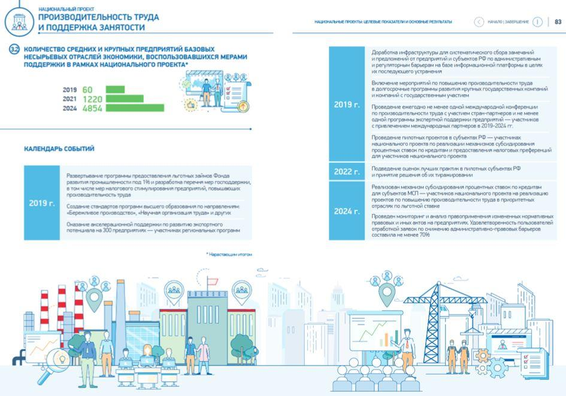

L’année 2020 sera vraisemblablement, historiquement, l’année qui ouvrira le cycle d’après, celui d’une époque au sein de laquelle Vladimir Poutine ne sera plus le président de la fédération de Russie.
La nomination de Mikhail Michoustine est une illustration de l’avenir que Vladimir Poutine envisage pour la Russie et surtout des élites qu’il souhaite pour diriger le pays.
Un avenir bien différent de celui que nous promettait la grande majorité des commentateurs et soi-disant spécialistes de la Russie de 2000 à 20201.
Ancien chef du Service fédéral des impôts depuis 2010, Mikhail Michoustine est crédité d’avoir conçu et réalisé l’extraordinaire numérisation des services fiscaux russes2, permettant d’augmenter les recettes fiscales russes de 20 à 35% du produit intérieur brut et surtout de faire en sorte que « les impôts cessent d’être un problème pour les entreprises russes ».
Ingénieur de formation, il aurait de fortes connaissances sur les technologies importantes, telles que la blockchain et l’intelligence artificielle. Selon le PDG de Sberbank, German Gref, Michoustine serait3 rare, talentueux et polyvalent et l’un des managers les plus efficaces et les plus qualifiés du pays. Pour le chef de la Chambre des comptes, Alexei Kudrin, Michoustine a le doigt sur le pouls de la numérisation.
En plus d’être un conservateur sur le plan sociétal, c’est un musicien hors pair qui a conçu certaines des chansons de Grigory Leps4.
Anecdote, il n’avait pas de page Wikipedia5 avant sa nomination … La Kremlinologie est une science qui ne pardonne pas
Cette digitalisation de l’administration russe ne concerne pas que le Service fédéral des impôts mais l’ensemble des services administratifs.
Conséquence, la capitale, ville pilote de cette digitalisation est devenue aujourd’hui l’une des villes les plus connectées6 du monde, via notamment le travail de l’actuel maire de la Ville Serguey Sobyanine.
Depuis le début du redressement national, entame en 1999, Vladimir Poutine avait réussi la création d’un système politique de rassemblement, fédérant les clans et permettant un équilibre des intérêts. Comme l’a absolument parfaitement écrit Jean Robert Raviot7 :
« En menant, selon la tradition soviétique, une politique des cadres destinée à sélectionner les hommes les plus compétents, mais aussi les plus loyaux, le président russe cherche à consolider les bases du système corpocratique que d’aucuns qualifieraient de « capitalisme d’état » — qu’il a instauré, système dont la pérennité lui importe sans doute davantage que son destin personnel après 2024. »
La résignation du gouvernement Medvedev, sanctionné pour n’avoir sans doute pas suffisamment initié les réformes permettant la réalisation de la stratégie 2020 est un signe qu’au Kremlin, on a compris, a un niveau élevé, le défaut de politique intérieure, mission du gouvernement russe. La figure de Medvedev et de son gouvernement, relativement impopulaire en Russie n’était sans doute pas le meilleur binôme pour les prochaines élections législatives dans un contexte global qui voit un effritement de la confiance envers Russie Unie, sur fond de contestations principalement sociales. Pour autant, ami d’enfance du président et homme de première confiance, les nombreux commentateurs qui ont mis Dimitry Medvedev « au placard » font une grosse erreur d’analyse, le poutinisme fonctionne en grande partie sur le binôme « confiance / loyauté ».
Fait par contre absolument impossible à envisager il y a même 5 ans : la Russie dispose d’un gouvernement dont la moyenne d’âge est de 45 ans, une génération de technocrates, moins politiques, une génération qui n’appartient pas à l’entourage historique du président russe, ni aux réseaux de « Leningrad ». Hormis Lavrov et Shoigou, hommes forts du précédent gouvernement et proches de Vladimir Poutine, seul l’ancien ministre des finances survit en tant que figure des « libéraux » kremlin-compatibles issus de la période Medvedev.
Fait encore plus incroyable : les modifications de la constitution que le président a initié verront l’obligation pour les fonctionnaires, ministres et candidats à la présidence russe l’obligation de n’avoir ni double nationalité, ni d’avoir résidé et obtenu à l’étranger un document de séjour ou résidence ; et surtout d’avoir vécu en Russie 25ans, contre 10 ans aujourd’hui.
Les enfants de la grande majorité de l’élite russe actuelle, qui étudient à l’étranger sont donc déjà hors-jeu des sphères de gouvernance de la Russie post-Poutine. Ne seront pas Tsars de Russie les enfants dont le logiciel mental aura été façonné à Yale, Stanford ou la Sorbonne, dieu merci pour la Russie ; exactement comme c’est le cas en Chine8.
Une réelle transition, en profondeur, est en cours, scénario qui va totalement à l’encontre du narratif prévu par le mainstream, pris une fois de plus de cours par la stratégie des élites russes dont on ne sait plus trop combien elles ont de coups d’avance.
Une autre chose importante est passé relativement inaperçue des commentateurs sur la Russie : les changements de la constitution comprennent un amendement qui affirme que désormais la loi nationale, russe est prééminente sur les décisions des stances juridiques internationales telles que la Cour européenne des droits de l’homme et du Conseil de l’Europe.
C’est une petite révolution qui ne fait que confirmer les tendances de fond initiées en 2014 : le voyage épique de la Russie vers l’Europe a cessé9 et les élites russes sont passés de la fascination à la compassion envers l’Occident et surtout l’Europe », comme l’a si magnifiquement écrit Vladislav Surkov en 2018.
Sans surprise, les premières déclarations du nouveau premier ministre auront été tournées vers la nécessité de refaire augmenter le pouvoir d’achat des russes qui a baissé continuellement depuis 2014 et le début de l’ère des sanctions. Il faudra regarder si la tendance à la hausse constatée10 en fin d’année dernière pour la première fois depuis 2014 est une tendance lourde ou pas.
Les faibles revenus d’une part importante de la population sont un problème « particulièrement aigu » qui constitue une « menace directe » pour l’avenir démographique de la Russie en ne permettant pas 11 aux familles de faire des enfants qu’elles souhaiteraient12, à savoir 2,5 enfants / famille selon les études faites ; ceci explique la dimension absolument incroyable du volet social et démographique que les autorités russes vont déployer au cours des prochaines années.
Lors de son premier discours à la Douma, le nouveau Premier ministre a nommé six priorités pour son poste de premier ministre: le lancement d’un nouveau cycle d’investissement; utiliser efficacement les ressources allouées aux projets nationaux (que nous détaillons ci-dessous); développer le complexe militaro-industriel; stimuler le développement technologique de l’économie; favoriser l’expansion du secteur agricole; et développer les infrastructures de transport pour réduire les disparités régionales.
La décision du Tsar Poutine de rompre l’architecture du Tandem sous sa forme actuelle aura été une surprise pour tous les experts de la Russie et autres kremlinologues avertis ; on imagine ce qu’il en sera pour la succession, qui selon tout vraisemblance, est déjà organisée.
Le départ du président russe de sa fonction ne signifie sans doute pas pour autant son départ complet de la scène politique russe. S’il semble désornais quasi certain que Vladimir Poutine ne sera pas président de la Russie de 2024 à 2030 sauf force majeure ; il semble cependant plausible qu’il continuera à occuper une position dominante qu’elle soit au sein du conseil de sécurité, ou ailleurs.
Le Tandem « pourrait » se retrouver à diriger les deux conseils, de sécurité et d’état, afin d’assurer un accompagnement de la nouvelle gouvernance présidentielle et législative qui émergera des législatives de 2021 et de la présidentielle de 2024.
La mission pour le Tsar sera sans doute ailleurs : assurer durant un laps de temps le bon fonctionnement de la transition, et plausiblement poser les derniers fondements nécessaire pour permettre au poutinisme de survivre à Vladimir Poutine et ainsi permettre 13
« à l’État, cette grande substance secrète de l’histoire russe qui en 1991 bascula dans le gouffre et fut réduite en cendres, de continuer a se relever, lentement, sûrement, de plus en plus rapidement, inébranlable et invincible dans son mouvement ascendant, car en lui, en l’État, agit le destin. Et cet État a choisi Poutine pour conduire le processus historique en Russie.
Ce n’est pas Poutine qui construit l’État, c’est l’État qui construit Poutine. »
***
Détails des projets nationaux 2020 – 2024
Les projets nationaux sont un Grand Projet14 initié par le gouvernement russe en 201915, nouvelle version des projets prioritaires de 2005, et devant être réalisés durant la période 2019-2024 (soit au cours du dernier mandat de Vladimir Poutine) et pour la réalisation duquel a été attribué 25 trillions de roubles soit 350 milliards d’euros au cours du 02 février 2020 sur 6 ans.
Les projets comprennent :
LE PLUS GROS LOT EST CELUI DES INFRASTRUCTURES « MAGISTRALES » NOTAMMENT
- Les routes ;
- Les routes transfédérales notamment les autoroutes et les axes entre la Russie et la Chine ;
- Les ports ;
- La construction de 8 brise-glaces ;
- La route maritime du nord et ses infrastructures ;
- Les voies ferrées ;
- Les canaux ;
- Augmenter le transport de frêt par 8 ;
- Augmenter de 50% la capacité globale de transport containers du pays ;
Amélioration de l’indice de performance logistique du pays pour passer de la 75ème à la 50ème place mondiale ;
- Augmentation de 35% des vols domestiques pour que la Russie passe de 105 millions à 140 millions de passagers en 2024, dépassant l’Allemagne et le Japon et arrivant au niveau de l’Angleterre et augmenter de 50% le nombre de vols inter-régions ne passant pas par Moscou.
- Développer les infrastructures énergétiques ;
- Installer une première centrale nucléaire flottante en Chukotka ;
- Créer de nouveaux bouquets d’oléoducs et gazoducs.
LA DÉMOGRAPHIE
Vladimir Poutine a annoncé la prolongation jusqu’en 2026 du programme de stimulation de la natalité appelé « Capital maternel », lancé en 2007 et qui devait à l’origine prendre fin en 2021.
L’objectif est de redresser le taux de natalité a 1,7 enfants / femmes (comme en 2016, contre 1,5 en 2019).
Le programme consistait en une dotation accordée à partir du deuxième enfant, mais les statistiques16 montrent que si le MatKapital a eu un effet très positif sur la démographie au cours des 10 dernières années, désormais le problème n’est plus le second enfant, mais le premier. Le nombre de second, troisième, quatrième enfant augmente, mais le nombre de premier enfant lui diminue depuis 2017.
Le Matkapital (la dotation) sera désormais accessible dès le premier né et représentera dès janvier une somme de 466 617 roubles (6 820 euros) à laquelle seront ajoutés 150 000 roubles (2 192 euros) à la naissance du second. Les familles qui comprenaient déjà un enfant avant cette mesure et attendent la naissance d’un nouvel enfant percevront en une seule fois la somme cumulée pour les deux, soit près de 9 000 euros. Enfin, pour le troisième enfant, la législation russe continuera de proposer un remboursement des crédits immobiliers à hauteur de 450 000 roubles (6 577 euros), soit pour trois enfants jusqu’à un million de roubles de versements (un peu moins de 15 000 euros)17.
Il est également prévu d’augmenter les allocations familiales mensuelles par enfant qui n’étaient jusqu’ici versées que pour des enfants de moins de trois ans, l’âge d’éligibilité étant repoussé à sept ans. Ces allocations, qui devraient passer de 5 500 roubles en 2020 à 11 500 roubles en 2021, continueront toutefois d’être réservées aux familles dont le revenu ne dépasse pas le minimum vital fixé en 2019 à 11 000 roubles (160 euros) par mois et par personne. Ce montant varie en fonction des régions et de la situation socio-démographique (différents taux pour les enfants, les retraités et les personnes en âge de travailler)18.
Ce programme devrait concerner 1,3 milions19 de familles.
En plus les allocations pour les familles avec un enfant handicapé passeront de 5.500 à 10.000 roubles par mois. L’allocation d’invalidité ne s’applique qu’aux familles dont le parent ne travaille pas. En moyenne, 470.000 personnes reçoivent ce paiement par an.
Enfin les familles avec trois enfants ou plus bénéficieront désormais de déductions supplémentaires pour les taxes foncières et foncières ; Vladimir Poutine a également promis d’exempter les grandes familles de l’impôt foncier sur les parcelles allant jusqu’à six acres. Si une grande famille achète une parcelle de 10 acres, elle sera taxée comme si elle n’était que de quatre.
ÉCOLOGIE
C’est le troisième lot le plus doté ; les objectifs principaux sont la mise en place d’un dispositif fédéral opérationnel et fonctionnel de gestion, le traitement et tri des déchets ; la mise en place d’un programme d’amélioration de l’air ; de l’eau et acquisition de nouvelles technologies (eco-tech).
ROUTE ET SÉCURITÉ ROUTIÈRE
Visant à la construction de nouvelles infrastructures ; réduire la mortalité sur la route par 3,5 afin de rendre la circulation routière en Russie plus sure qu’en Allemagne (!)
NDLA : voir les nouvelles lois TRES sévères visant à discipliner les comportements au volant.
SANTÉ
Visant à baisser de 25 % les décès pour maladies cardiovasculaires ; baisser de 25% la mortalité infantile ; développer une production nationale d’équipement médical.
ÉDUCATION
Avec en objectifs principaux : la digitalisation de l’enseignement ; multiplier par quatre le nombre de spécialistes de l’IT et que la Russie passe du 17-ième au 10-ième rang sur 500 des universités mondiales.
CULTURE
Visant au développement des librairies et bibliothèques du pays.
LOGEMENT ET ENVIRONNEMENT URBAIN
Diminuer les taux d’intérêts pour l’acquisition immobilière a < 8 % et développer des programmes d’aides pour l’acquisition de la propriété ; augmenter la construction d’immobilier de logement de 79 millions à 120 millions de mètres carrés ; Mise en place d’un programme pour rentre plus belles les villes et l’environnement urbain.
SCIENCE
Faire entrer la Russie dans le top5 des nations en termes de publication d’articles dans les domaines scientifiques prioritaires (la Russie est aujourd’hui 12-ième) ; tripler le nombre d’instituts scientifiques ; doubler le nombre de revues scientifiques et faire passer le pourcentage de chercheurs de moins de 39 ans de 43 à 5 %.

ÉCONOMIE NUMÉRIQUE ET DIGITALE
Augmenter les dépenses informatiques de 1,7 % à 5,1 % du PIB ; Augmenter l’accès Internet à haut débit de 73 % à 97 % des foyers russes (c’est-à-dire aux niveaux scandinaves les plus élevés du monde) ; assurer l’accès au très haut débit à tous les objets d’infrastructure importants (hôpitaux, cliniques rurales, écoles, etc.) d’ici 2024 ; généraliser la 5G dans toutes les villes d’un million d’habitant ; Faire que la Russie passe de 1 % à 5 % de part de marché dans les technologies du cloud.
BUSINESS
Augmenter la part des entrepreneurs / petites et moyennes entreprises de 22,3 % à 32,5 % du PIB ; accroître l’accès au crédit pour les PME ; créer des centres d’entrepreneuriat ; etc.
PRODUCTIVITÉ
Éduquer le capital humain pour augmenter la productivité.
COMMERCE INTERNATIONAL
Augmenter l’export de production nationale, notamment les machines, la production chimique, métallurgique, pharmaceutique, les services, l’agriculture et la production de bois.

Partager cette page